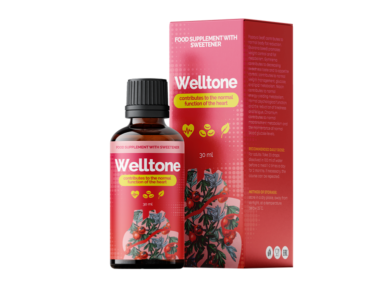

– Statistică: Fiecare al 3-lea cetățean cu vârsta mai mare de 35 de ani moare de boli provocate de hipertensiune!
Nedelciuc Andrei: «Eu, personal, 2020 voi expedia primilor cititori o soluție contra hipertensiunii cu reducere de 50%»

Celebrul chiirurg cardiolog, organizator al științei medicale, profesor.
Bolile cardio-vasculare șunt lideri mondiali între toate bolile, după numărul de vieți pe care le curmă. 94% de infarcturi și accidente vasculare cerebrale se produc anume din cauza tensiunii mărite. În 89% de cazuri hipertensiunea în cazul infarctului sau accidentului vascular cerebral duce la un sfârșit letal. Dacă e să vorbim de valori concrete, atunci hipertensiunea este cauza a aproximativ 77-78% de decese din ”cauze naturale”. În cifre absolute aceasta constituie în jur de 1,54 milioane de decese în anul 2016.
“Cauzele mortalității în 2016.”
Cel mai îngrozitor este faptul că majoritatea oamenilor nici nu bănuiesc că au hipertensiune. Conform statisticii, 67% de hipertensivi nu știu că sunt bolnavi.Totul constă în aceea, că nimeni nu ia în serios salturile de tensiune, până când nu se ajunge la criză hipertensivă, când valorile tensiunii depășesc orice norme. Nu prea mulți atrag atenție durerilor de cap, vertijurilor, slăbiciunilor, umflării feței, ritmului cardiac întețit, privirii încețoșate, nervozității. Iar toate aceste simptome sunt dovada unei hipertensiuni cronicizate. Și tot ele ne spun că trebuie să luăm urgent măsuri, până nu e prea târziu!
În ziua de astăzi există o singură soluție contra hipertensiunii, care acționează asupra cauzei bolii și, dacă sunt respectate instrucțiunile, vindecă deplin hipertensiunea. Este soluția germană «». Soluția «» restabilește complet elasticitatea vaselor, datorită unei formule științifice unice. La fel, preparatul scade nivelul colesterolului și normalizează ritmul cardiac. Este foarte important faptul că «» nu este doar eficient, ci și inofensiv pentru sănătate, deoarece constă exclusiv din componente naturale. De aceea «» poate fi administrat la orice vârstă, fără teama de efecte secundare și complicații din partea altor organe. Eficacitatea și siguranța soluției este demonstrată de numeroase teste clinice, la care au luat parte peste 5000 de persoane.
Mai înainte «» nu era furnizat în toate țările, chiar dacă eu personal am dus lungi tratative cu producătorii. Dar acum, în sfârșit, «» poate fi procurat și în țara noastră.
A fost luată decizia de anulare a sancțiunilor la importarea soluțiilor europene contra hipertensiunii.
— Bună ziua, Qi Huidei. Povestiți-ne, vă rog, de ce a fost luată o asemenea decizie?
— Sarcina noastră principală este păstrarea sănătății populației pe întreaga planetă. Și dacă există undeva o problemă, noi trebuie obligatoriu să o rezolvăm. Din păcate, din țara noastră a sosit o statistică descurajantă: peste 70% de locuitori suferă de hipertensiune, și aproape fiecare al treilea moare din cauza bolilor cardio-vasculare. Acest indicator este de multe ori mai mare decât nivelul european.
— Acestea sunt, întradevăr, niste cifre înspăimântătoare! Spuneți, vă rog, cum decurge lupta cu problema hipertensiunii în Uniunea Europeană?
— La momentul actual în toate clinicile și centrele de reabilitare europene este adusă soluția inovativă «», elaborată de savanții germani. O caracteristică aparte a «» este faptul că nu are contraindicații și însănătoșește vasele la nivel celular. Ea permite normalizarea rapidă a tensiunii și nu admite dezvoltarea bolilor cardio-vasculare.

—Qi Huidei, este adevărat că soluția dată este deja accesibilă la noi?
— Da, anume aceasta am în vedere, atunci când vorbesc despre o anulare temporară a sancțiunilor la importul soluțiilor europene contra hipertensiunii. Această decizie este luată la nivel înalt și este coordonată. Când vorbim despre sănătatea populației, nu este loc de disensiuni politice.
— Povestiți-ne, ce influență are «» asupra organizmului?
—După rezultatele cercetărilor Organizației Mondiale a Sănătății, soluția «» are următoarele efecte:
- • duce la un tonus al vaselor sanguine;
- • scade nivelul colesterolului;
- • normalizează ritmul cardiac.
La momentul actual avem următoarea statistică:
- – în profilaxia bolilor cardio-vasculare la persoane trecute de vârsta de 35 de ani, cu ajutorul soluției «» a fost remarcată normalizarea tensiunii arteriale la 97% de respondenți;
- – la prescrierea soluției «» în perioada de reabilitare, după crizele hipertensive suportate, a fost remarcată o îmbunătățire a circulației sângelui în vasele creierului la 86% persoane.
— Qi Huidei, vă mulțumesc mult pentru interviu! Este, întradevăr, o stire excelentă pentru toți locuitorii. Să sperăm că acum vom putea face față hipertensiunii și vom putea să mărim durata medie de viață a românilor.
Comentarii